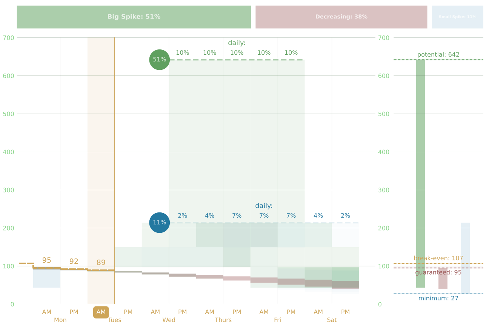

stalkbroker-py¶
We at Nook, Nook, and Nook Investment (TM) are excited to bring you Stalkbroker, a discord bot for tracking you and your friends’ turnip prices in Animal Crossing!
Using the Bot¶
Setting your Timezone¶
Your timezone is important for us to correctly track the prices on your island. It might be daytime inside stalkbroker’s server when it’s nighttime on your island!
To let stalkbroker know what timezone you are playing in, type:
$timezone <your timezone>
Like so:
$timezone America/Los_Angeles
Stalkbroker will confirm it heard you with a few reactions!
Timezones names are very a particular, you can find your timezone name
here, in the
'TZ database name' column.
Try to find the most specific timezone possible – time standards are weird and hard! How we wish everyone could be on ~island time~… but the stalkmarket moves too fast for that!
Note
There are three shorthand timezones stalkbroker will recognize:
US/Pacific: PST
US/Eastern: EST
US/Central: CST
For all other timezones, see the chart referenced above.
Setting Your Current Turnip Price¶
Stalkbroker keeps a stalk ticker for your turnip price each week.
To set your current turnip price, use the following command:
$ticker 205
We’ll add a few reactions to your post to let we know we heard you.
If your bell price is high, the following bulletin will be sent to your server’s bulletin channel:
The Market Is Moving!!!
Market: @Billy (Zalack) 🍊 - Verune
The Nooks' Offer: 205
Date: Saturday Apr 24, 2020
Period: PM
Memo: 401K through the vegetable way.
@everyone
Note
The default threshold for sending out a bulletin is a sale price of 200 bells. This threshold is configurable by the server admins.
Note
We’re smart enough to know that Sunday is the day Daisey Mae comes into town. Your price that day will be set as the purchase price automatically!
Note
If you are a member of multiple servers that stalkbroker is also a member of, your bulletin will be sent to each server’s bulletins channel. That way you only need to type your update once and stalkbroker will take care of the rest.
Stalkbroker CANNOT see servers it is not invited to, so only servers which have stalkbroker installed will get these automatic updates!
Setting a Past Turnip Price¶
Say it’s 12:30 PM and (oh no!) you forgot to update your ticker in the morning! Not to fret! You can type:
$ticker 121 AM
In this case, a bulletin will not go out to your server, as it is not a current, actionable price. The market doesn’t move on yesterday’s news, as we say. However, it’s still worth setting so you can pull up a more complete ticker later.
If you missed an earlier day, you can also specify a a date:
$ticker 136 4/23 AM
Down the road, stalkbroker will be able to do price projections, and the more complete your ticker, the more accurate the projections will be!
Note
When setting a price, the price, date, and time of day (AM/PM) can appear in any order. All of the following commands are valid:
$ticker 136 4/23 AM
$ticker 136 AM 4/23
$ticker AM 136 4/23
$ticker 4/23 AM 136
etc, etc
Note
When setting the price for a sunday, Stalkbroker knows this is the the purchase price. Additionally, when retroactively setting past price, there is no need to include the AM / PM value for a sunday, though including it will not throw an error.
Getting Your Ticker¶
To look up your current week’s stalk ticker, just type:
$ticker
Stalkbroker will give you an overview of your market’s trends:
Market Report
Market: Billy (Zalack) 🍊 - Verune
Week Of: 04/19/20
Daisey'S Deal: 98
Monday Am: 68
Monday Pm: 78
Tuesday Am: 89
Tuesday Pm: 65
Wednesday Am: 110
Wednesday Pm: 115
Thursday Am: 209
Thursday Pm: 190
Friday Am: 180
Friday Pm: 120
Memo: Not just another piece of shovelware
To get a ticker for a past week just request a date from that week:
$ticker 4/5
And to get a friend’s ticker instead of yours, just tag ‘em:
$ticker @TheRealDarthVader
Warning
You cannot set a price on a friend’s ticker, only view it. Mentions on ticker commands with a bell price to update will be executed on your stalk ticker.
Getting Your Forecast¶
To get a forecast for your current week, complete with a beautiful chart:
$forecast
You’ll get a chart like so:
{kind=link}
And the following report:
Market Forecast
Market: Billy (Zalack) 🍊 - Verune
Week Of: 05/17/20
Likely High: 642 (85% chance)
Big Spike: 642 (85% chance)
Small Spike: 214 (11% chance)
Soonest Spike: 1 day
Memo: Turn-up your profits.
Signing up for Bulletins¶
Bulletins go out when a server members price goes through the roof! To be notified when a bulletin is published, type:
$bulletins subscribe
This will sign you up for bulletins on every server both you and stalkbroker are a part of! On these servers you will get added to the ‘Stalk Investor’ role, which is mentioned on bulletins.
To be removed from the role, just type:
$bulletins unsubscribe
Warning
By default, you ARE NOT subscribed to bulletins. Make sure to subscribe for those sweet, sweet turnip deals.
Installing the Bot¶
To install the bot, make sure you have permissions to add bots to your server, then click this link.
Congratulations! Your server now has cutting-edge, best-in-class investment support from Nook, Nook, and Nook Investment.
Configuring the Bot¶
Bulletins Channel¶
To set the channel you want price bulletins to come into, type this in the desired channel:
$bulletins here
Bulletins Minimum¶
To change the minimum bell price required for bulletins, invoke this command in any channel:
$bulletins minimum 310
Now bulletins will only be sent when a sale price is at or above 310 bells.
And that’s it! Let’s make some bells together.
Bulletins Role¶
When stalkbroker joins your server, it will automatically create a ‘Stalk Investor’ role and add / remove users as required based on their preference for being notified of a bulletin.
Whenever a bulletin goes out, this role is mentioned at the bottom.